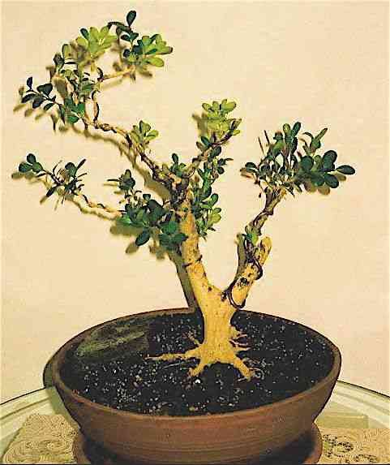
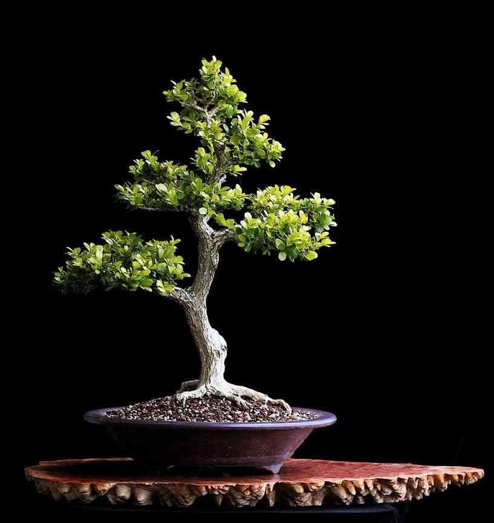
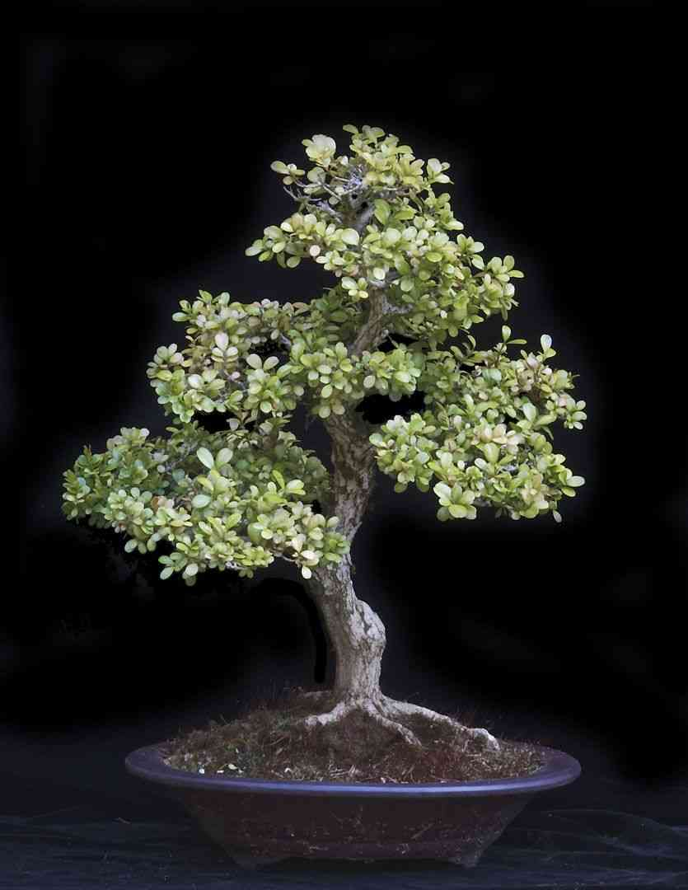
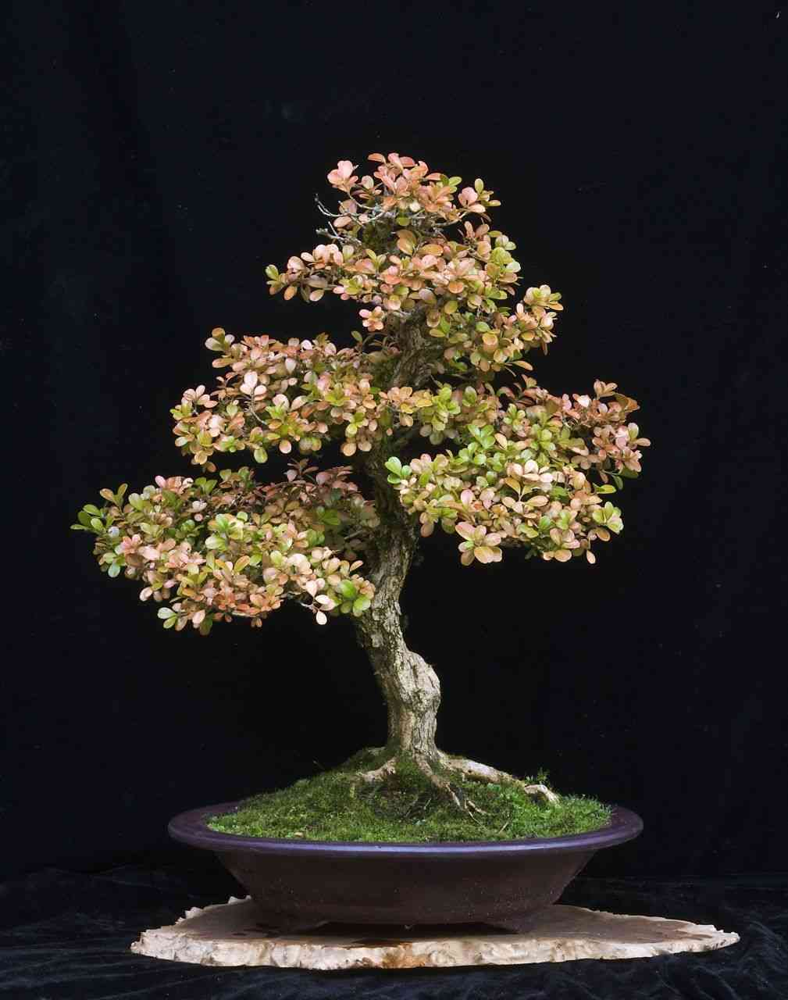
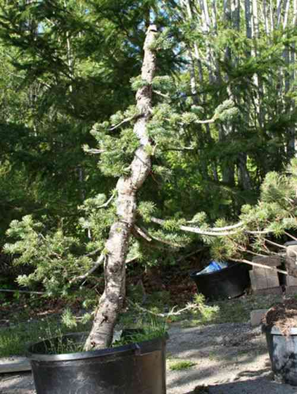
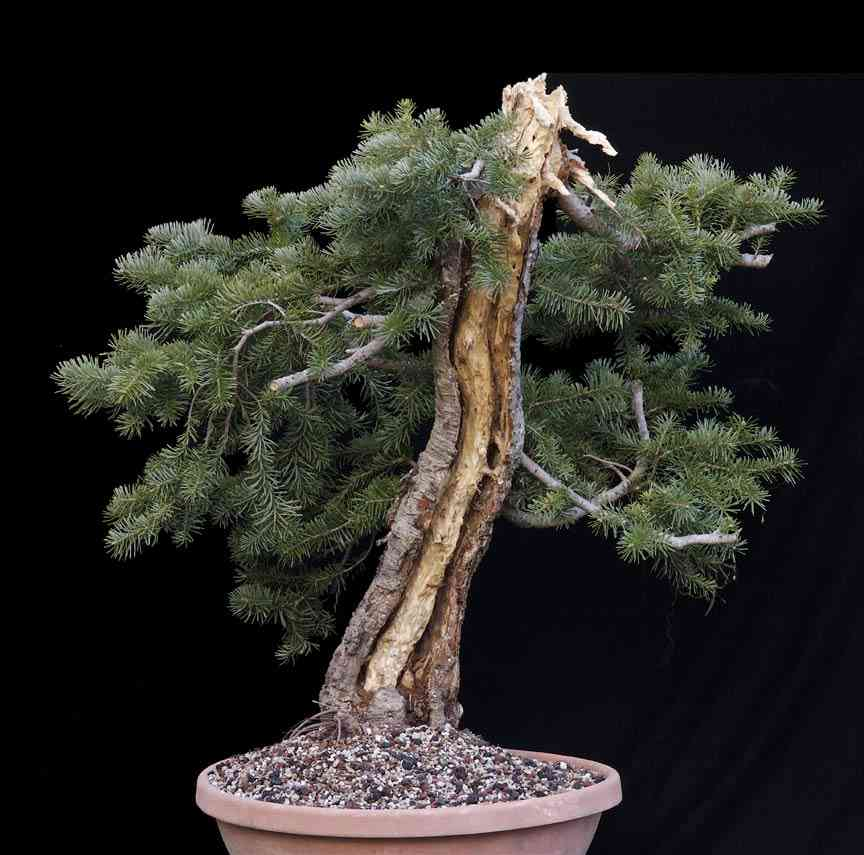
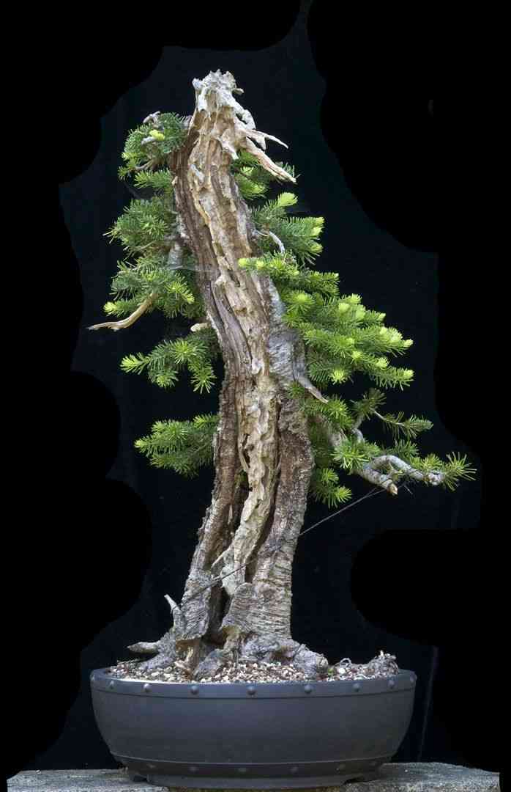
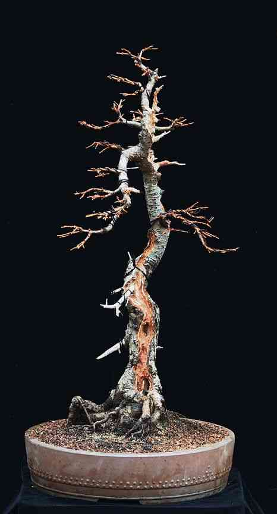
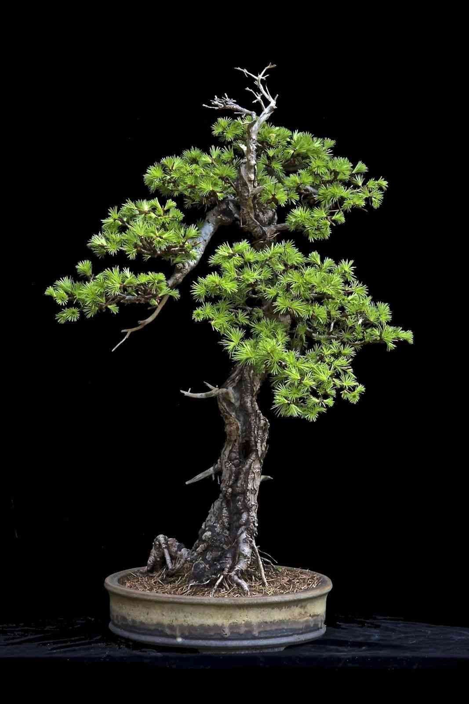

The 5 to 10+ Year Progression Thread
By user: @grouper52
Created at: Sep 27, 2018 at 10:32 AM
ThreadId: 35597
#1
@grouper52
Sep 27, 2018 at 10:32 AM
I've been doing bonsai for about twenty years now, and am probably much better at it than I am at navigating the sort of extensive, expansive, and in depth web site that BNut has become. So I don't know if there is a general thread for old timers like me to post their long-term - 5-10+ year - progression threads. The idea occurred to me today after I posted two such progressions in response to a fellow new to bonsai who seemed like he could benefit from seeing what starter material can become with time, patience, good horticulture, good technique, and a good eye. I put two progressions on his inquiry thread, "What Difference Does It Make?", and thought I'd put a few more to start this thread. But this thread will hopefully allow all the seasoned folks here to contribute their own stylistic outcomes for the new folks to learn from, and be inspired by.
I'll start with my very first tree, a Korean Boxwood I found in the sale section of a regular nursery in Memphis about twenty years ago, being brand new to bonsai after my younger brother sent me a little Schefflera as a gift. The progression spans from about 1999 for the first photo - then quite a jump a jump to 2006 for the second, then a more steady progression to 2015. Enjoy!
kb1-97k.jpg
kb3.jpg
Box-Sp-08-Lens1--.jpg
Boxwood.jpg
KBoxFAll_15.jpg
#2
@grouper52
Sep 27, 2018 at 10:48 AM
Next, a 10 year progression - 2006 to 2016 - with an Alpine Fir. It starts with a tree I got from a regular nursery, thinking I could air layer it at an interesting knee-like bend about three feet up from the base. The best laid plans didn't amount to much, and the air layer failed ... and I then decided to just work with what had by then become a half-rotted trunk with great potential ...
")
. When dealt lemons ... make lemonade! Enjoy!
af-4_06.jpg
AlpineFirUro-09Repot.jpg
AFBeatUp-3-10.jpg
AFBeatUp-3-10-2.jpg
AFShow.jpg
#3
@grouper52
Sep 27, 2018 at 11:07 AM
#4
@grouper52
Sep 27, 2018 at 11:19 AM
#5
@Brian Van Fleet
Sep 27, 2018 at 1:35 PM
I love your work Will, and your threadbranch Chamaecyparis pisifera is one of my favorite trees ever to hit this site. Wonder where it went. Had it been shippable and able to do well in AL, it would be in my garden!
Do you miss working with some of the conifers you had available in WA? The tropical you have now are such a change.
Attachments
#6
@grouper52
Sep 27, 2018 at 3:16 PM
I love your work Will, and your threadbranch Chamaecyparis pisifera is one of my favorite trees ever to hit this site. Wonder where it went. Had it been shippable and able to do well in AL, it would be in my garden!
Do you miss working with some of the conifers you had available in WA? The tropical you have now are such a change.
Thanks for your kind words, Brian. Dan Robinson asked to have the Threadbranch for his Elandan Gardens Collection when I left, along with a number of other trees. I'm, returning to the States - probably permanently - in about two weeks, so I'll see it and the others again.
It's interesting about the night-and-day differences between the Conifers and the Tropicals - and thanks for bringing it up.. When I just got over here seven months agoI think I posted somewhere here on BNut about
not missing the Conifers at all, given the no-brainer ease of working with the Tropicals in a tropical climate ... but now, looking back over these progression threads with these mostly conifers I realise how superior their beauty is in my eyes when they turn out well. All things considered, I prefer them quite a bit ... more work and headache and uncertainty, but you get what you pay for in life, and the extra dues paid were well worth what I got from them. It'll be nice to see some of my old ones soon when I visit Dan at Elandan.
It would be great to see you post some of your progressions here, BTW!
Thanks again.
#7
@Cosmos
Sep 27, 2018 at 3:29 PM
Grouper, those progressions you posted in the thread
What is the difference? are splendid and, most of all, extremely inspiring. My favourite type of progressions is from totally raw material.
Thank you for posting these and good to have you back on this side of the Pacific soon.
#8
@Vin
Sep 27, 2018 at 4:15 PM
I'm, returning to the States - probably permanently - in about two weeks, so I'll see it and the others again.
Oh no! (and yippee!) I hope all is well and things didn't go South for you in the Philippines. None of my business by the way so need to respond.
#9
@grouper52
Sep 27, 2018 at 4:44 PM
Grouper, those progressions you posted in the thread
What is the difference? are splendid and, most of all, extremely inspiring. My favourite type of progressions is from totally raw material.
Thank you for posting these and good to have you back on this side of the Pacific soon.
Thanks, Cosmos. I think I'll re-post those progressions from the other thread over here tomorrow just to flesh out the idea a bit more here, but I sure hope others have kept such photographic records of their trees' progressions and can diversify the progression artist count at least a wee bit soon ... It would sure make this thread a great central location to give newbies some idea what's possible over time, and perhaps how to go about it
#10
@Brian Van Fleet
Sep 28, 2018 at 12:29 AM
#11
@Brian Van Fleet
Sep 28, 2018 at 12:44 AM
#12
@grouper52
Sep 28, 2018 at 1:31 AM
How about a 8-year(?) progression on a ROR trident maple. Attached in maybe 2010, all the way up to 2018.
Great work, Brian, on both these trees. Once again, I think folks here who are just getting started - and even us more experienced folks - can get a great deal of inspiration and education to see how it's done, and the sort of transformation they can make with even questionable-looking starter material from all sorts of sources.
I hope many others - if they (or their computers) kept a photographic record of such progressions, will post them here on this thread for the edification of newer folks. Thanks, Brian, for posting, and thanks in advance to any others who do so.
#13
@grouper52
Sep 28, 2018 at 1:44 AM
#14
@Brian Van Fleet
Sep 28, 2018 at 3:39 AM
#15
@Brian Van Fleet
Sep 28, 2018 at 4:22 AM
#16
@grouper52
Sep 28, 2018 at 2:05 PM
I'll keep drip, drip, dripping these old progressions until they're all done. I certainly hope others will do so as well, and that newbies and such who might benefit from studying these progressions will be drawn or directed here over time.
A Japanese Larch, which I believe originally from John Hinds as part a half dozen or so he had raised and then sold to Dan Robinson to sell at Elandan Gardens, where I acquired it. The progression goes from 2007 to 2015. One of my all-time favourite trees to work with and look at, BTW - enjoy!
jl-i.jpg
jl2.jpg
JL-W-07.jpg
JLarch-09Spring-HDR.jpg
JLarchHDR.jpg
J-Larch-Spring-12.jpg
J.Larch.jpg
#17
@grouper52
Sep 28, 2018 at 2:15 PM
#18
@grouper52
Sep 28, 2018 at 2:24 PM
#19
@Deleted member 21616
Sep 28, 2018 at 3:36 PM
@Brian Van Fleet Thank you for sharing this progression!
Quick question, in some of the photos of your maple it looks like the tree might have been a graft (maybe it's just the part of the trunk that gets he most light?)? if it is a graft, it is great to see (in your second last photo, for example) that this can be healed so beautifully albeit over the span of 16 years
#20
@petegreg
Sep 28, 2018 at 3:44 PM
#21
@ABCarve
Sep 28, 2018 at 5:27 PM
#22
@ABCarve
Sep 28, 2018 at 5:44 PM
#23
@barrosinc
Sep 28, 2018 at 6:55 PM
This thread is gold. I haven't been on this 5 years yet.
#24
@Lazylightningny
Sep 28, 2018 at 7:30 PM
#25
@Brian Van Fleet
Sep 29, 2018 at 12:51 AM
@Brian Van Fleet Thank you for sharing this progression!
Quick question, in some of the photos of your maple it looks like the tree might have been a graft (maybe it's just the part of the trunk that gets he most light?)? if it is a graft, it is great to see (in your second last photo, for example) that this can be healed so beautifully albeit over the span of 16 years
It’s not a graft, just how this cultivar barks up. I’ve grown several air-layers from this one, and they’ve all done the same.
#26
@my nellie
Sep 29, 2018 at 1:08 AM
... ... It would sure make this thread a great central location to give newbies some idea what's possible over time, and perhaps how to go about it
Yes, it would and thank you for creating this really inspirational/influencing thread.
#27
@grouper52
Sep 29, 2018 at 1:10 AM
Great progressions! Thanks. This one is exactly he sort of progression that I think the younger/newer folks can learn a lot from: The simple - but profoundly impactful - "re-vision" of tree's position between pix 2 and 3 is the sort of creative stroke of genius that anyone can do if they have the eye, and your photos here will give them the eye to look for such things in the future. Spectacular tree! Again, thanks.
#28
@my nellie
Sep 29, 2018 at 1:13 AM
... ...Once again, I think folks here who are just getting started - and even us more experienced folks - can get a great deal of inspiration and education to see how it's done, and the sort of transformation they can make with even questionable-looking starter material from all sorts of sources.
I hope many others - if they (or their computers) kept a photographic record of such progressions, will post them here on this thread for the edification of newer folks.
Many thanks to all members participating up to now!
I do hope more will respond, too.
#29
@my nellie
Sep 29, 2018 at 1:27 AM
Firstly, thank you for sharing the progression of these nice trees of yours.
Laurus Noblis or Bay Laurel- 2011-2018
Secondly, do you find the leaves of Laurel can reduce their size?
Thank you.
#30
@grouper52
Sep 29, 2018 at 1:44 AM
#31
@ABCarve
Sep 29, 2018 at 1:56 AM
Firstly, thank you for sharing the progression of these nice trees of yours. Secondly, do you find the leaves of Laurel can reduce their size?
Thank you.
They do reduce as you can see in the photo. Some are even smaller. I'm still playing with pruning periods. The nodes can be 1/8" (3mm) apart.
IMG_3438.JPG
#32
@wireme
Sep 29, 2018 at 1:59 AM
#33
@grouper52
Sep 29, 2018 at 1:59 AM
A simple three-photo progression of a Cryptomeria mame/shohin I acquired at a little garden nursery and first styled and photographed in 2007. The progression ends November 2013 with the tree in gorgeous fall colours - one of my favourite little photographs! Enjoy!
cm.jpg
CryptoMame.jpg

CryptoShohin.jpg
#34
@Brian Van Fleet
Sep 29, 2018 at 2:01 AM
#35
@grouper52
Sep 29, 2018 at 2:08 AM
Rmj 5 yearer. Pics are 2013, 2015 and 2018. Last two same time different light.
Oooo ... Nice! You can't beat the Western American yamadori conifers for sheer rugged beauty! Nicely done!
#36
@grouper52
Sep 29, 2018 at 2:11 AM
Itoigawa Shimpaku from Evergreen Gardenworks. Possibly my favorite tree.
2010, as purchased, 2011 styled with Peter Warren, 2012 change of plan, 2013 wired by Owen, 2014 wired by me: 2015 through 2018; wired twice again. Last shot is current:
View attachment 211561 View attachment 211570
Whoa! That sure came a long way in a hurry! Kudos!
#37
@Vin
Sep 29, 2018 at 3:14 AM
#38
@grouper52
Sep 29, 2018 at 3:28 AM
This is another rare and unusual little beauty I found at one of those little mom-and-pop middle-of-nowhere garden nurseries in the rural expanses of the Puget Sound area - a Spanish Lavender. Photos span only 2007-10, a little short of 5 years, but hey ... I had it still until shortly before I left the States seven months ago, but can't seem to find more recent photos. The full-bloom photo and the final photo are two of my favourites. Enjoy!
SLFlowers-07.jpg
SL-SP-08.jpg
SLFlowers-08.jpg

SpanishLavender-09Repot.jpg
SpLavender10-1.jpg
#39
@grouper52
Sep 29, 2018 at 3:31 AM
but it still hasn't reached the potential I think it has.
Maybe not, but it sure has come a LONG way! Great progression from such an ordinary-looking piece of material! Thanks.
#40
@Vin
Sep 29, 2018 at 4:16 AM
#41
@grouper52
Sep 29, 2018 at 5:07 AM
This Chinese Elm progression actually started around 2000, though I have no photos until a number of years later. I got the tree from Brussels - who had imported it - when we were living a short distance away in Memphis briefly. Shortly thereafter my wife and I built a home on some property I owned on the plateau at the foot of the mountain in Taos, New Mexico - a very, very, VERY bad place to try to raise bonsai! At about 7000 feet elevation in a high desert climate, where, within the same 24 hour diurnal cycle, temperatures could swing from the low nineties daytimes of below zero at night, and humidity was negligible, our trees either died or struggled greatly before being forced to move elsewhere after three years (because my wife developed intractable allergies to sagebrush!). We lost many great bonsai, despite valiant efforts that included a green house and other such remedies, but among the few that survived was this Chinese elm, which - because it lost about half of its live sections - now had great deadwood features!
So the progression photos pick up in 2007 when the dramatic changes in the general outlines of the tree are already established (sorry), and then the progression ends - after a series of small, gradual, undramatic refinements - in 2015, showing an ever improving image developed merely by preserving and honouring the deadwood, while framing and thereby accentuating that deadwood using clip-and-grow techniques almost exclusively - as the Chinese of old in Lingnan Province, where these trees originate, would have done. One of my all-time favourite trees, which Dan Robinson asked to have for his Elandan Garden Collection when I moved overseas, and which he has since planted on a rock slab of some sort - an ever-increasing stylistic choice for him as he continues to mature. Enjoy!
CE07.jpg
CEt.jpg
CEW-W07.jpg
ce!.jpg
CE-09copy.jpg
CE-09.jpg
Chineseelm-15.jpg
#42
@grouper52
Sep 29, 2018 at 7:09 AM
#43
@grouper52
Sep 29, 2018 at 7:48 AM
And here's the other progression from the "What Difference Does It Make" thread that got me started on this thread:
This is a collected tree/yamadori - a Mountain Hemlock from the Cascades in Washington State. I forgot how I came by it - probably not from a nursery, but I might have collected it myself or bought it from Dan after he collected it.
These are difficult trees to work with in some ways, requiring some finesse to achieve the kind of natural appearance this tree shows: 1. They never back bud, leaving long unfoliated branches in their wake as the sparse foliage moves outwards on the otherwise bare branches, and 2. They are notorious for responding to the use of wrapped wire by just suddenly - in an unpredictably capricious manner, and almost overnight - thickening their bark around the wire, making what later looks like very ugly sections of distorted-looking branches that are very conspicuous and distracting. So those were the challenges with this tree.
The progression speaks for itself, moving from a gangly long-branched thing in 2006 to a compact and very natural-looking tree about 10 years later. Since I prefer naturalistic trees, I was very pleased with this one, which also went into Dan’s Elandan Gardens Collection when I left the States as I recall. Enjoy!
mh-5_06.jpg

mh1a.jpg
MHY-W07-2.jpg
MH1.jpg
MH-W-08.jpg
MH-09Repot.jpg
MH-09Jin.jpg
MH-09.jpg
MH-11copy.jpg
MHcopy.jpg
#44
@grouper52
Sep 29, 2018 at 8:48 AM
So ... while everyone over across the oceans is sleeping, and I have little to do while I await my flight out of here in a few days, I've decided I'll go against my original idea to trickle these progressions over a series of days, and just finish the remaining few today, posting all the really good 5-10+ year progressions I have (and probably all I'll ever have, given my age as I return to start bonsai again with brand new trees in the US.
)
But I started this thread so that all you old timers with years of bonsai beneath your belts can add your own material to what will be a growing resource for newbies and all others who come to BNut. I've been gratified to see the progressions others have posted so far, often with much different sorts of trees, and much different approaches to styling than my progressions demonstrate. I hope others can learn a great deal in a condensed and well-organized way with this thread, and that it generates much lively discussion, and if that turns out to be the case, then I will be happy I started it.
So, one more progression before I run out of good, first-tier ones: This is a Shore Pine I found and collected on a trip to a lowland bog way up at the northern tip of Vancouver Island with Dan Robinson in 2010. It's a small tree, but ancient, and easy to style since the wood is extremely flexible because it forms poorly in the highly acidic soil conditions of the bog. The final image is from 2015. Enjoy! And thanks for appreciating the thread and contributing, if you have, or if you plan to in the future. A Dios.
ShorePine-10F.jpg
SPine3-12.jpg
ShorePineSemiCasc-1-12.jpg
SP-6_15.jpg
ShorePineBalance.jpg
ShorePinecopy.jpg
#45
@Brian Van Fleet
Sep 29, 2018 at 2:52 PM
This is a Threadbranch False Cypress
AWESOME!
#46
@Brian Van Fleet
Sep 29, 2018 at 3:06 PM
#47
@grouper52
Sep 29, 2018 at 3:45 PM
Here is a kurume azalea I dug up from our front yard in 2000, probably planted in the 1960s when the house was built.
I flew it to a Ben Oki workshop in 2005 (2nd shot) and then a shot every couple years thereafter, until 2018.
18 years and three houses later.
/QUOTE]
Spectacular transformation, Brian, and a spectacular tree! What a beauty from such humble beginnings! Kudos!
#48
@grouper52
Sep 29, 2018 at 4:14 PM
Well ... maybe I'll post some second tier ( - due merely to being less than five years in duration - ) progressions before calling this project quits ...
... here's another Cryptomeria, which are real no-brainer trees for even the newest newbie. It's only a three-to-four year progression, because I then gave it - as seen in the last photo - to some dear neighbours and friends of ours for their 25th anniversary, with instructions ... and with promises of willingness to instruct, inspect, or care for the tree, or whatever - which were never heeded - such. that it died within a few months in a climate where even significant neglect should have kept it alive much, much longer. Enjoy ... or weep!
Crypto-Gift-1.jpg
Cryptomeria.jpg
Crypto-Gift-3.jpg
#49
@bonhe
Sep 29, 2018 at 4:18 PM
Thanks Grouper52 to create this educational post and welcome back to the States.
I like to share progression of this crepe myrtle.
I acquired it on 10/30/10. Sorry, the picture's quality was not good at all because I was so excited to take pictures as soon as it come to my garden at dusk!
DSC_1710.jpg

DSC_1712.jpg
on 4/14/18
IMG_6963.jpg
Thụ Thoại
#50
@bonhe
Sep 29, 2018 at 4:25 PM
#51
@bonhe
Sep 29, 2018 at 4:33 PM
#52
@grouper52
Sep 29, 2018 at 4:38 PM
Here's my last worthwhile Progression, though one that ends less than ideally.
It's a Shore Pine that I got in 2007 from Dan Robinson, who collected it in a lowland bog at the northeren tip[ of Vancouver Island. My call to come talk to him at Elandan Gardens about purchasing this tree, was the start of my writing/photographing/publishing in 2009 my book about him, Gnarly Branches.
The progression only goes from my purchase of the tree in 2007, to 2008, because sometime after that - several years at least, as I recall - it lost a key segment of it's structure, and never looked as great again after that. Anyway, in it's prime it was world class, - if only briefly - which is a key lesson to learn if you go down this road with trees. Enjoy! And Fine' for this thread

sp.jpg
YSPW07.jpg
ShorePineCascade.jpg
ShorePineCascadeHDR.jpg
#53
@Hartinez
Sep 29, 2018 at 4:42 PM
And here's the other progression from the "What Difference Does It Make" thread that got me started on this thread:
This is a collected tree/yamadori - a Mountain Hemlock from the Cascades in Washington State. I forgot how I came by it - probably not from a nursery, but I might have collected it myself or bought it from Dan after he collected it.
These are difficult trees to work with in some ways, requiring some finesse to achieve the kind of natural appearance this tree shows: 1. They never back bud, leaving long unfoliated branches in their wake as the sparse foliage moves outwards on the otherwise bare branches, and 2. They are notorious for responding to the use of wrapped wire by just suddenly - in an unpredictably capricious manner, and almost overnight - thickening their bark around the wire, making what later looks like very ugly sections of distorted-looking branches that are very conspicuous and distracting. So those were the challenges with this tree.
The progression speaks for itself, moving from a gangly long-branched thing in 2006 to a compact and very natural-looking tree about 10 years later. Since I prefer naturalistic trees, I was very pleased with this one, which also went into Dan’s Elandan Gardens Collection when I left the States as I recall. Enjoy!
View attachment 211654View attachment 211655View attachment 211656View attachment 211657View attachment 211658View attachment 211659View attachment 211660View attachment 211661View attachment 211662View attachment 211663
This hemlock is wonderful.
#54
@bonhe
Sep 29, 2018 at 4:44 PM
I got this California juniper from the Kofu Kai's auction on 6/21/2008. This tree was dug by Mr. Harry Hirao years before.
The tree in on 6/22/08 with the name tag was still on the pot.
8-08.jpg
on 11/8/2008
cali.jpg
on 10/21/2017
IMG_4267.JPG
IMG_4271.JPG
Thụ Thoại
#55
@Hartinez
Sep 29, 2018 at 4:57 PM
I’m not even at the 5 year mark on my quality trees. But I’ll be back ...?
#56
@Adair M
Sep 29, 2018 at 5:41 PM
#57
@bonhe
Sep 29, 2018 at 6:59 PM
#58
@bonhe
Sep 29, 2018 at 7:09 PM
#59
@JudyB
Sep 29, 2018 at 8:49 PM
I'm, returning to the States - probably permanently - in about two weeks, so I'll see it and the others again.
yay!
#60
@JudyB
Sep 29, 2018 at 8:51 PM
#61
@my nellie
Sep 30, 2018 at 12:10 AM
... ...... here's another Cryptomeria, which... ... I then gave it - as seen in the last photo - to some dear neighbours and friends of ours... ... such. that it died within a few months in a climate where even significant neglect should have kept it alive much, much longer. Enjoy ... or weep!
View attachment 211686
Such a shame!
I had a friend who almost quite bonsai after an experience similar to yours.
#62
@my nellie
Sep 30, 2018 at 12:13 AM
... ...This is a Shore Pine I found and collected on a trip to a lowland bog way up at the northern tip of Vancouver Island with Dan Robinson in 2010. It's a small tree, but ancient, and easy to style since the wood is extremely flexible because it forms poorly in the highly acidic soil conditions of the bog.
View attachment 211667
The flowing trunk line of this tree is really amazing!
#63
@my nellie
Sep 30, 2018 at 12:37 AM
Edit : almost
quit bonsai
#64
@Gustavo Martins
Sep 30, 2018 at 1:55 AM
Best thread on BNut IMO... Thanks guys!
#65
@Brian Van Fleet
Sep 30, 2018 at 2:07 AM
#66
@grouper52
Sep 30, 2018 at 9:03 AM
Best thread on BNut IMO... Thanks guys!
That would be a very high honour indeed! Thank you, from me - and I'm sure from all the other contributors as well - for your kind words.
What this thread has to teach - among many other more obvious things - is to start training your eye to see the potential in even the most unlikely material. The really obvious stuff is great to work with as well, of course, but it will likely cost you a pretty penny, especially if you get it from a bonsai nursery or such. I always liked to save my money for great pots and such, and I used to love to go to little non-bonsai, non-box-store, not-well-known
garden nurseries looking for great material.
I'm wrapping up seven months living with my wife over here in the Philippines, for instance. She's from here, from a farming family of 12 kids originally, and she and all her relatives love growing plants in pots and in their yards, but none knew much about bonsai before they met me, and became fascinated with it. On a trip several months ago down to her home province of Bicol, a very hot area of south/central Luzon, a number of her sisters who were avid gardeners took me around the entire province for several days to help me find bonsai material in the local garden nurseries there (there ARE no bonsai nurseries, nor even any bonsai artists or hobbyists down there, that any of them had ever heard of).
So we'd all go to a nursery of garden/landscape trees along a road somewhere, and whenever we got out of the car her sisters would start immediately telling me to look at this or that well-manicured specimen prominently displayed as an eye-catcher near the entrance, and they'd get more and more upset as I'd just glance briefly at these "beauties" and then proceed apace out of sight to the old, ugly, unkempt trees that were dumped or thrown or otherwise relegated to the obscurity of what amounted to the peripheral refuse heap of discarded and worthless inventory - and only
there would I, perhaps, find a treasure or two worthy to be worked into a bonsai. And I would bring those treasures up and pay a few pesos for them, and explain why
those trees would make great bonsai, and why the expensive showpieces at the entrance usually wouldn't ... and I've been pleased to hear since then that her sisters are beginning to catch on now, and loving it!
#67
@grouper52
Sep 30, 2018 at 9:11 AM
The flowing trunk line of this tree is really amazing!
Glad you like it: The main 180 degree kink to the far right was entirely imposed by me, with nary a hint of even the slightest setback for the more distal foliage. These trees from that bog are amazing in that regard!
#68
@defra
Sep 30, 2018 at 2:07 PM
Great thread thnx for sharing!
In two more years i will have a couple 5 year progressions to share

#69
@M. Frary
Sep 30, 2018 at 2:27 PM
That one still hurts Will.
For all here reading this thread,this tree ended up with me.
Jack pines are the native species where I live. The rest of Michigan used to be White pine and cedar. But where I live it's been Jack pines. I started collecting them 5 years ago now At the time there was very little information on them and no one else had one.
Except Will.
When he moved he gave this tree to me. That's right. Gave it.
I planned on showing it the next year.
But that winter the voles showed up.
As I started getting trees out for spring I saw that most had no bark. It was elms,hawthorns and maples I was digging out at first. Done. But in the back of my mind I thought they certainly dont eat pines!
I got to the pines and it was too late. I was wrong!
Stripped bare!
I'll admit it right here,right now.
I actually stopped,sat down and cried.
Like a baby.
I probably would have been alright if all of my trees got ate but this one.
I almost quit then.
But I'm still here because of Will.
He lost all of his trees too. Not from voles pr unforeseen catastrophe. He moved.
He was going to start fresh.
So could I.
I probably have a tree for this thread too.
A jack pine ar that too.
Later.
#70
@grouper52
Sep 30, 2018 at 3:18 PM
Mike, I had no idea it was voles! Not much you could have done to prevent
that, I reckon!
You've carried that guilt or regret or whatever around too long, in my humble opinion, Mike. Yes, it was great tree, but I had to part with it anyway, and I never held it against you, and your friendship and your moving forward with bonsai
despite that loss are more important to me than that tree -however great it was.
I've had a fantasy lately of getting an RV or something after I get back to the States, and travelling around the country for a while visiting relatives and old friends - as well as some of the folks I've met here on BNut ... and you're at the top of
that category!
#71
@M. Frary
Sep 30, 2018 at 4:29 PM
Mike, I had no idea it was voles! Not much you could have done to prevent
that, I reckon!
You've carried that guilt or regret or whatever around too long, in my humble opinion, Mike. Yes, it was great tree, but I had to part with it anyway, and I never held it against you, and your friendship and your moving forward with bonsai
despite that loss are more important to me than that tree -however great it was.
I've had a fantasy lately of getting an RV or something after I get back to the States, and travelling around the country for a while visiting relatives and old friends - as well as some of the folks I've met here on BNut ... and you're at the top of
that category!
If you ever showed up here you would be seeing one happy man!
Every time I see pictures of this tree I get all choked up. And mad.
It's a bittersweet thing that happened to me.
Here's a guy I've never met in person.
He has trees that anybody would admire.
He sends me this tree because Ive shown a great interest in Jack pines.
The rest he gives to a very trusted friend.
Its by my far the best tree I now own.
Ive been trusted with this magnificent tree.
Will has put time,labor and love into it.
It dies in my care.
So yes I still feel very guilty.
I've never had anyone put that kind of trust in me.
You come here Will.
I'll take a weeks vacation.
We'll hit the woods.
Maybe find a Squatch.
Go see Vance.
Hang out.
#72
@my nellie
Sep 30, 2018 at 6:07 PM
Mike
@M. Frary , this conversation/confession you have here with Will
@grouper52 is really emotional and affecting the readers...
I appreciate your sharing sincerely with us your sentiments.
You're a soft heart of gold under
that white, scaring, clown face
#73
@Adair M
Sep 30, 2018 at 6:59 PM
If you ever showed up here you would be seeing one happy man!
Every time I see pictures of this tree I get all choked up. And mad.
It's a bittersweet thing that happened to me.
Here's a guy I've never met in person.
He has trees that anybody would admire.
He sends me this tree because Ive shown a great interest in Jack pines.
The rest he gives to a very trusted friend.
Its by my far the best tree I now own.
Ive been trusted with this magnificent tree.
Will has put time,labor and love into it.
It dies in my care.
So yes I still feel very guilty.
I've never had anyone put that kind of trust in me.
You come here Will.
I'll take a weeks vacation.
We'll hit the woods.
Maybe find a Squatch.
Go see Vance.
Hang out.
Mike, this one’s for you!
#74
@grouper52
Oct 1, 2018 at 2:00 AM
I've never had anyone put that kind of trust in me.
You come here Will.
I'll take a weeks vacation.
We'll hit the woods.
Maybe find a Squatch.
Go see Vance.
Hang out.
Things right now are very fluid and uncertain once I'm back in The States, but I'm going to try to make it happen - it's been on my mind for a long,
long time. It occurs to me that dead of winter there may not be a great time to hunt trees, compared to late fall or early spring, but I may be completely wrong about that, so let me know. I'd love to do it, and we
will do it!
#75
@Brian Van Fleet
Oct 1, 2018 at 3:25 AM
#76
@grouper52
Oct 1, 2018 at 8:01 AM
Here is a JBP I bought at Brussel’s in 2007; progression spanning 11 years to 2018. The complete training/development of this tree is the topic of the book which can be found in my sig file.
Brian! I'm replying not only because this is such a great progression - and with one of the mainstay bonsai species that I never had the skill to master well ...

- but because I didn't realise you were also a writer/photographer/publisher of a bonsai book! Kudos! And thanks for all your great editions to this thread (and this site!).
On my itinerary for possibly touring the country when I return home soon is a stop in Clemson, S.C. to see my older sister - my only surviving first degree relative! Alabama, where my maternal grandparents used to live near Montgomery, may not be far out of my way since I'm likely on my tour to head south first and re-visit and re-connect with my beloved desert haunts like Taos and areas of Arizona, as well as old Buddhist connections and friends in the Dallas area further east. It would be great to stop by and meet you and see your work first hand if that would be OK with you - let me know and we can discuss it further if that's OK with you. If not, for any reason, that's OK as well, so just let me know.
Once again, I greatly admire you finesse and artistry with JBPs - the king of bonsai material! Gorgeous trees you've shown here!
I'm curious, as well, for myself and others here: in the first picture of this tree, can you point out what area - or areas, or what structure or whatever - you first saw in this tree that led you to choose it above others, and which you felt was the most promising hint of it's future beauty id developed properly. Sorry if that's in the book - just tell me to go purchase it!
#77
@Brian Van Fleet
Oct 1, 2018 at 1:43 PM
If you’re traveling through, it would be my pleasure to meet you and give you the tour. Send me a PM when you have some dates and I’ll give you my contact information to work out the details.
The book is based on the idea of old books of stills that shows the subject in motion as you flip through it. It’s this same tree, photographed in the same spot over a span 8 years, with text teaching the training technique and timing, followed by the effect of the technique several weeks and months later. It seems that the intimidation factor of jbp is a lack of understanding of the effects of bud pinching, candle-cutting, needle-pulling, etc. This takes the mystery away.
And yes, of course you (and everyone here?) should buy the book. I chose this tree because among the jbp in this group priced at $350, it had the best taper, biggest trunk, and some movement. Probably the best thing I did was change the front and make the tree 5” shorter. It was accepted into Nationals this year, but I withdrew it at the last minute because I wasn’t satisfied with how it looked.
#78
@Adair M
Oct 1, 2018 at 2:05 PM
Brian! I'm replying not only because this is such a great progression - and with one of the mainstay bonsai species that I never had the skill to master well ...
- but because I didn't realise you were also a writer/photographer/publisher of a bonsai book! Kudos! And thanks for all your great editions to this thread (and this site!).
On my itinerary for possibly touring the country when I return home soon is a stop in Clemson, S.C. to see my older sister - my only surviving first degree relative! Alabama, where my maternal grandparents used to live near Montgomery, may not be far out of my way since I'm likely on my tour to head south first and re-visit and re-connect with my beloved desert haunts like Taos and areas of Arizona, as well as old Buddhist connections and friends in the Dallas area further east. It would be great to stop by and meet you and see your work first hand if that would be OK with you - let me know and we can discuss it further if that's OK with you. If not, for any reason, that's OK as well, so just let me know.
Once again, I greatly admire you finesse and artistry with JBPs - the king of bonsai material! Gorgeous trees you've shown here!
I'm curious, as well, for myself and others here: in the first picture of this tree, can you point out what area - or areas, or what structure or whatever - you first saw in this tree that led you to choose it above others, and which you felt was the most promising hint of it's future beauty id developed properly. Sorry if that's in the book - just tell me to go purchase it!
I’m in the direct path between Clemson and Birmingham so, do stop in here before you go to see BVF. Besides, I need to tell you what all BVF does wrong with his JBP before you see his!
")
Lol!!!
But you can see this tree:
02F14F51-77BF-4285-8664-83B5A0458B8F.jpeg
Which I have spammed all over this forum! I did show it at the Nationals a couple years ago, and it is currently undergoing revouvenation!
A recent photo:
75E2071A-2C68-4357-A9D8-25E9FF685A2A.jpeg
Wow!!! It is completely furry with long needles! But giving it a year off with no decandling gives it a chance to regain vigor after having been decandled 5 years in a row, and having 3/4 inch needles for 5 years. (All those 3/4 inch needles are still in there, just buried under the long ones. It’s going to be a chore finding them and pulling them in November!)
I’ll make a post of the journey of this tree.
#79
@Adair M
Oct 1, 2018 at 2:12 PM
I’m in the direct path between Clemson and Birmingham so, do stop in here before you go to see BVF. Besides, I need to tell you what all BVF does wrong with his JBP before you see his!
Lol!!!
But you can see this tree:
View attachment 211953
Which I have spammed all over this forum! I did show it at the Nationals a couple years ago, and it is currently undergoing revouvenation!
A recent photo:
View attachment 211955
Wow!!! It is completely furry with long needles! But giving it a year off with no decandling gives it a chance to regain vigor after having been decandled 5 years in a row, and having 3/4 inch needles for 5 years. (All those 3/4 inch needles are still in there, just buried under the long ones. It’s going to be a chore finding them and pulling them in November!)
I’ll make a post of the journey of this tree.
You might enjoy this critique of this tree by Dan Robinson:
#80
@grouper52
Oct 1, 2018 at 2:30 PM
You might enjoy this critique of this tree by Dan Robinson:
Great to hear Dan's voice and wisdom again - it's been seven months for me. As you can tell, he hates - I mean literally HATES - concave cutters! It's
always about the deadwood for Dan!
I'd love to stop by and meet you as I pass your way! You've been quite an inspiration and force here on BNut since I joined many years ago, and I admire anyone who really understands the potential of JBLs, and how to bring it out over the years. I'll be in touch as my plans firm up in that regard ... meanwhile I have to get across a vast expanse of ocean and get my bearings in the New World again ...
#81
@dcw
Oct 1, 2018 at 2:40 PM
Great to hear Dan's voice and wisdom again - it's been seven months for me. As you can tell, he hates - I mean literally HATES - concave cutters! It's always about the deadwood for Dan!
I'd love to stop by and meet you as I pass your way! You've been quite an inspiration and force here on BNut since I joined many years ago, and I admire anyone who really understands the potential of JBLs, and how to bring it out over the years. I'll be in touch as my plans firm up in that regard ... meanwhile I have to get across a vast expanse of ocean and get my bearings in the New World again ...
Does he hate them as much for deciduous trees as well?
Pine deadwood tends to survive much better than deciduous deadwood. On top of that, I can see branches that are removed in a (re)design to be left as a jin. Sacrifice branches on the other hand, I can see being removed entirely, as they strengthen the effect of hiding the behind the scenes creation of a bonsai tree.
#82
@grouper52
Oct 1, 2018 at 2:48 PM
If you’re traveling through, it would be my pleasure to meet you and give you the tour.
Wow! Between you and Adair M, I'd say the South is a hotbed of JBP activity! I'd love to stop by and meet you both, and see these gorgeous trees of yours.
As a Southern boy in my youth, with many summers working at a Boy Scout camp in the mountains of Rockbridge County, Virginia, and my "Rat" Year at VMI, and with both Caldwell and Calhoun blood coursing through my veins, it will be good to be among such people and landscapes again - it's been a long time! Looking forward to it!
#83
@grouper52
Oct 1, 2018 at 2:51 PM
Does he hate them as much for deciduous trees as well?
Pine deadwood tends to survive much better than deciduous deadwood. On top of that, I can see branches that are removed in a (re)design to be left as a jin. Sacrifice branches on the other hand, I can see being removed entirely, as they strengthen the effect of hiding the behind the scenes creation of a bonsai tree.
Read/study my book about Dan for the answer to that one ...
#84
@Adair M
Oct 1, 2018 at 2:56 PM
Will,
Those branches had been removed LONG before I acquired the tree. Long, as in decades! In fact, they’re nearly calloused over.
JBP deadwood, jins anyway, aren’t long lasting. Dan is overly influenced by the Pacific Northwest. But we all are influenced by the trees we see around us every day. For the longest time, I didn’t “get” the deadwood junipers. We don’t have anything like them here. Any deadwood rots away quickly here. Until I went climbing up on the Sierras. And could visit the thousands-year-old trees with their amazing checkered sun and wind bleached deadwood. No humidity, no insects, no molds, fungus, mildew...no rain for six months of the year... all these factors yield completely different effects on the trees.
#85
@dcw
Oct 1, 2018 at 2:59 PM
Read/study my book about Dan for the answer to that one ...
Unless there's more than one, it is proudly standing on my bookshelf. Guess it's time for a re-reading

#86
@Adair M
Oct 1, 2018 at 3:02 PM
Wow! Between you and Adair M, I'd say the South is a hotbed of JBP activity! I'd love to stop by and meet you both, and see these gorgeous trees of yours.
As a Southern boy in my youth, with many summers working at a Boy Scout camp in the mountains of Rockbridge County, Virginia, and my "Rat" Year at VMI, and with both Caldwell and Calhoun blood coursing through my veins, it will be good to be among such people and landscapes again - it's been a long time! Looking forward to it!
There’s some pretty good ones in California, too!
#87
@fredtruck
Oct 1, 2018 at 3:10 PM
#88
@ABCarve
Oct 1, 2018 at 5:22 PM
#89
@JudyB
Oct 1, 2018 at 5:32 PM
I do hope Will that you'll make the swing up to visit Ohio on your tour, I'd be so happy to see you again. I will try to find some time to stick a couple progressions in here too.
#90
@Lazylightningny
Oct 1, 2018 at 6:21 PM
#91
@Lazylightningny
Oct 1, 2018 at 6:36 PM
that last shot is fantastic
#92
@Lazylightningny
Oct 1, 2018 at 8:40 PM
the fourth image to the fifth image is where the real transformation happened!
#93
@ABCarve
Oct 1, 2018 at 9:34 PM
#94
@Vin
Oct 1, 2018 at 10:44 PM
San Jose Juniper 2011-2018. This is from a carving class I taught in the early 90s. It is the only one that lived. Probably because I ignored for two years before I worked on it again.
Maybe I should ignore mine for a few years if it will end up looking like yours.
How long do you expect it to stay in juvenile?
#95
@Adair M
Oct 1, 2018 at 11:00 PM
Maybe I should ignore mine for a few years if it will end up looking like yours.
How long do you expect it to stay in juvenile?
It’s a San Jose. It will never go completely scale. I’ve seen one go 95% scale, but that was exceptional. They tend to stay more juvi than scale.
Which is why many great San Jose trunks get grafted with Kishu.
#96
@my nellie
Oct 1, 2018 at 11:01 PM
The spiraling characteristic of the trunk on "Neji-kan" variety is really amazing!
This is a "Neji-kan" isn't it?
#97
@my nellie
Oct 1, 2018 at 11:03 PM
THIS is transformation literally!
Thanks for the images!
#98
@ABCarve
Oct 1, 2018 at 11:36 PM
Maybe I should ignore mine for a few years if it will end up looking like yours.
How long do you expect it to stay in juvenile?
Probably as long as I own it. In our climate they never become fully adult growth. It’s always a mix, so I cut the adult growth off when it shows up.
#99
@LanceMac10
Oct 2, 2018 at 12:18 AM
#100
@grouper52
Oct 2, 2018 at 12:43 AM
I do hope Will that you'll make the swing up to visit Ohio on your tour, I'd be so happy to see you again. I will try to find some time to stick a couple progressions in here too.
I was thinking the same things, Judy: You - and a number of other folks here - are not that far from Mike up north of you, and I'm thinking of doing a circle - down the West Coast, across the South, up the East Coast at least to Maryland, then across the more northern states up your way. Thanks for the invite, and I'll keep you posted.
#101
@grouper52
Oct 2, 2018 at 1:14 AM
Will,
Those branches had been removed LONG before I acquired the tree. Long, as in decades! In fact, they’re nearly calloused over.
JBP deadwood, jins anyway, aren’t long lasting. Dan is overly influenced by the Pacific Northwest. But we all are influenced by the trees we see around us every day. For the longest time, I didn’t “get” the deadwood junipers. We don’t have anything like them here. Any deadwood rots away quickly here. Until I went climbing up on the Sierras. And could visit the thousands-year-old trees with their amazing checkered sun and wind bleached deadwood. No humidity, no insects, no molds, fungus, mildew...no rain for six months of the year... all these factors yield completely different effects on the trees.
Great points - I hadn't given that much thought, but it's great to see the truth and validity of both your viewpoint
and Dan's, and realise the enormous impact of such factors both practically and visually. Thanks!
#102
@grouper52
Oct 2, 2018 at 2:07 AM
#103
@Vin
Oct 2, 2018 at 2:42 AM
It’s a San Jose. It will never go completely scale. I’ve seen one go 95% scale, but that was exceptional. They tend to stay more juvi than scale.
Which is why many great San Jose trunks get grafted with Kishu.
I checked mine when I got home tonight and it's 99.9% scale. It's pretty large stock but that's all it is, pre-bonsai stock. It's one of those trees I never seem to be able to get to. Maybe this spring I'll repot it and get inspired.
#104
@Vin
Oct 2, 2018 at 3:42 AM
Not quite 5 years but I pushed this Pro Nana hard. The excessive deadwood really doesn't tell a story so I'll be removing some of it during the next couple years after some careful contemplation.
Here it is a few days after purchase before cleanup.
1stDayHome.JPG
DSCF0430.JPG
About a year later.
DSCF0481.JPG
Finally are two from 2017 and the final image is one from BVF Time Capsule that wasn't posted.
DSCF0515.JPG
DSCF0518.JPG
SamsungPhoto1.jpg
#105
@Adair M
Oct 2, 2018 at 4:13 AM
They’re like Procumbens. Leave them
I checked mine when I got home tonight and it's 99.9% scale. It's pretty large stock but that's all it is, pre-bonsai stock. It's one of those trees I never seem to be able to get to. Maybe this spring I'll repot it and get inspired.
alone for a long time, let it get potbound, they go scale. But, as soon as you do something to stimulate growth, like repot, fertilize, prune, etc, the growth hormones kick in and they go juvenile again.
#106
@grouper52
Oct 2, 2018 at 5:08 AM
Another old progression I tracked down: a Trident Maple that I think I may have bought from Sharon Muth at Bonsai Northwest in 2007, worked with a few years before it ends up looking quite a bit more gnarly in 2015 after I decided to bury it in the ground for five years. I sold it or gave it away shortly thereafter due to plans to move overseas, so it never came to full fruition under my care, but the changes - for good or bad - may be instructive to folks interested in learning what can be done with starter material.
Enjoy!
TM-1-W07.jpg
Trident-09.jpg
TMHDR-1.jpg
TMSlant-310.jpg
Trident-15.jpg
#107
@Marlon
Oct 2, 2018 at 9:33 AM
#108
@grouper52
Oct 2, 2018 at 10:36 AM
Will,
Those branches had been removed LONG before I acquired the tree. Long, as in decades! In fact, they’re nearly calloused over.
JBP deadwood, jins anyway, aren’t long lasting. Dan is overly influenced by the Pacific Northwest. But we all are influenced by the trees we see around us every day. For the longest time, I didn’t “get” the deadwood junipers. We don’t have anything like them here. Any deadwood rots away quickly here. Until I went climbing up on the Sierras. And could visit the thousands-year-old trees with their amazing checkered sun and wind bleached deadwood. No humidity, no insects, no molds, fungus, mildew...no rain for six months of the year... all these factors yield completely different effects on the trees.
Adair, your post here has continued to gnaw at me a bit, and this afternoon it sent me searching to examine the 50 spreads of the "gallery" section of my book to see exactly what Dan does in the way of deadwood - and especially jins - on deciduous trees, (as distinct from his almost ubiquitous use and imperative thoughts about such on conifers, whose deadwood is inherently less likely to decompose than that of the deciduous trees). Of the fifty trees featured in the Gallery, only 13 are deciduous. Of those, only a boxwood and an azealea feature jins, and the azalea's jins are almost afterthoughts. Although there are also four other deciduous trees that feature prominent deadwood features, jins don't figure in, (except perhaps the hidden one on the second azalea). Here are those six examples, plus another deadwood-rich Bougy of Dan's that I don't think made it into the book.
Box-2.jpeg
AZ-2.jpeg

Box-1.jpeg
AZ-1.jpeg
Bougy.jpeg
JMaple.jpeg
RightLeaningBougycopy2.jpg
#109
@Adair M
Oct 2, 2018 at 3:12 PM
Adair, your post here has continued to gnaw at me a bit, and this afternoon it sent me searching to examine the 50 spreads of the "gallery" section of my book to see exactly what Dan does in the way of deadwood - and especially jins - on deciduous trees, (as distinct from his almost ubiquitous use and imperative thoughts about such on conifers, whose deadwood is inherently less likely to decompose than that of the deciduous trees). Of the fifty trees featured in the Gallery, only 13 are deciduous. Of those, only a boxwood and an azealea feature jins, and the azalea's jins are almost afterthoughts. Although there are also four other deciduous trees that feature prominent deadwood features, jins don't figure in, (except perhaps the hidden one on the second azalea). Here are those six examples, plus another deadwood-rich Bougy of Dan's that I don't think made it into the book.
View attachment 212085View attachment 212086
View attachment 212087View attachment 212088View attachment 212090View attachment 212091
View attachment 212089
Will, I don’t mean to start a big controversy, all tree’s get some damage and Jin’s at some point. Some is more persistent than others. Sometimes it’s due to the nature of the wood, sometimes it’s due to the nature of the environment where the trees live.
I have watched deciduous trees, and trunks in my pasture go from perfectly healthy, to lightening struck, to dead, to deadwood, to home to woodpeckers, to fallen limbs, to rotten fallen limbs, to gone in about 8 years.
There are some Eastern White Pines a mile away that have snag Jin’s that have been there for at least 18 years, and still appear to be strong, and will continue to be there for a while.
So, it depends. Some trees, deadwood is a permanent feature. Some not.
THAT’s the point I was making about Dan. (And in his later years, Warren Hill, too.). They subscribe to the “Jin everything” school. And I disagree. I think Jin’s have their place, but not tree, not every composition.
Doing so is as dogmatic as the “green helmet” or “over refined” styles. Why should every tree have Jin? Not every tree lives in a harsh environment.
I think part of the beauty, and fun! of bonsai is the medium allows for a great variety of styles and images. Everyone has their favorites and is entitled to have a preference. For instance, I don’t much care for ficus. I don’t want to have to have a special winter set up to maintain tropical trees. But, when I see one that’s well done I can appreciate it.
Dan was able to “appreciate” my JBP’s level of refinement. He didn’t like the scars, but they weren’t recent, had thick rounded, closing callouses. They look “natural” to me, but I guess that’s a personal thing.
It’s interesting what people “see” when they look st a tree. That tree that Dan critiqued had been at the 2016 Nationals about a month prior. Kathy Shaner’s critique was that I should have gone over the tree and colored the tip ends of all the spring candle stubs with a brown manic marker. The tips were kind of white where the sap had dried. But not yet fallen off. By December, the dried sap falls off or is washed off by rain and watering. So, in September, the little sap ends were visible. So Kathy said I should have colored them to hide them! No mention of the pruning scars.
So, there ya go! I guess everyone is entitled to their own pet peeve! Lol!!!
#110
@BobbyLane
Oct 2, 2018 at 7:54 PM
Adair, your post here has continued to gnaw at me a bit, and this afternoon it sent me searching to examine the 50 spreads of the "gallery" section of my book to see exactly what Dan does in the way of deadwood - and especially jins - on deciduous trees, (as distinct from his almost ubiquitous use and imperative thoughts about such on conifers, whose deadwood is inherently less likely to decompose than that of the deciduous trees). Of the fifty trees featured in the Gallery, only 13 are deciduous. Of those, only a boxwood and an azealea feature jins, and the azalea's jins are almost afterthoughts. Although there are also four other deciduous trees that feature prominent deadwood features, jins don't figure in, (except perhaps the hidden one on the second azalea). Here are those six examples, plus another deadwood-rich Bougy of Dan's that I don't think made it into the book.
View attachment 212085View attachment 212086
View attachment 212087View attachment 212088View attachment 212090View attachment 212091
View attachment 212089
These look so natural and rugged, while being beautiful on the eye. thanks for sharing. some wonderful progressions on this thread too, nice work guys.
#111
@grouper52
Oct 3, 2018 at 3:28 AM
Will, I don’t mean to start a big controversy, all tree’s get some damage and Jin’s at some point ....
So, there ya go! I guess everyone is entitled to their own pet peeve! Lol!!!
No controversy intended! And the "pet peeve" thought is certainly a true but sad observation.
It reminds me of a story in one of Alexander King's four books of memoirs: he was a commercial artist and illustrator, and quite a story-teller, who used to come on some of the late night shows in the early days of television. He tells the story of a commission he accepted once in his youth to draw/paint a full-page spread in a major magazine - an advertisement for a cruise line - where the executives met with him and told him they wanted a very beautiful nighttime scene of the ship's main deck with a band playing and about a hundred nicely-dressed couples waltzing around. It was a big project, and the money involved made it worthwhile, so he worked hard on it for a long time, bringing it to perfection, before bringing it to the executives again to show them and get their approval. When they saw it, they simply sat there in absorbed silence for a long, long time, until finally - when the silence had become quite uncomfortable - one of the executives - knowing nothing of art, but needing to prove his importance as an executive, told King, "It's really very nice ... except I think it would be better if you rotated the entire scene about 15 degrees to the left." (!!!). King then went on to say that he learned his lesson very well that day, and in the future whenever he was asked to paint anything for anyone who had to approve it, he would, for instance, paint one man with two left feet, so that the executive could quickly play his role of giving criticism, yet with the solution for the artist requiring no more than a few minutes to correct.
#112
@Adair M
Oct 3, 2018 at 4:39 AM
No controversy intended! And the "pet peeve" thought is certainly a true but sad observation.
It reminds me of a story in one of Alexander King's four books of memoirs: he was a commercial artist and illustrator, and quite a story-teller, who used to come on some of the late night shows in the early days of television. He tells the story of a commission he accepted once in his youth to draw/paint a full-page spread in a major magazine - an advertisement for a cruise line - where the executives met with him and told him they wanted a very beautiful nighttime scene of the ship's main deck with a band playing and about a hundred nicely-dressed couples waltzing around. It was a big project, and the money involved made it worthwhile, so he worked hard on it for a long time, bringing it to perfection, before bringing it to the executives again to show them and get their approval. When they saw it, they simply sat there in absorbed silence for a long, long time, until finally - when the silence had become quite uncomfortable - one of the executives - knowing nothing of art, but needing to prove his importance as an executive, told King, "It's really very nice ... except I think it would be better if you rotated the entire scene about 15 degrees to the left." (!!!). King then went on to say that he learned his lesson very well that day, and in the future whenever he was asked to paint anything for anyone who had to approve it, he would, for instance, paint one man with two left feet, so that the executive could quickly play his role of giving criticism, yet with the solution for the artist requiring no more than a few minutes to correct.
Lol!!!
That reminds me of another Kathy Shaner story! (I’m not trying to pick on Kathy... really!)
The Atlanta Bonsai Society had her as guest artist one month, and it was at a Plant City Bonsai, where I give classes. And she was going to do a demo (where I helped her with a neglected shimpaku) and she was also going to do critiques of club members trees. Well, I had a nice twin trunk JWP, fairly old, that had been given its first styling a couple years before by Daisaku Nomoto, a Kokufu Prize winning artist. After his initial styling, which was rather extensive, I was letting it recover for a couple years. So, it was getting a bit shaggy.
Anyway, I brought it as I thought it had great potential. And all she could talk about were two shoots that had popped up out of the Silohette of the canopy of the tree! And she went on and on about them. I was tempted to just go over and prune them off, and say, “tell me something else!”, but I didn’t.
Lol!!!
#113
@River's Edge
Oct 3, 2018 at 4:57 AM
#114
@grouper52
Oct 3, 2018 at 5:03 AM
Adair M:
Great story! I actually have a peculiar soft place in my heart for Kathy Shaner, although I never met her and don't know much about her: I've almost never put my trees in shows or competitions, but one time when I did I was told later (by the couple that eventually bought it) that Kathy Shaner - whom I'd at least heard of - "really liked" my Sub-Alpine Fir Literati (posted above) when it was in a show at about the time of that last photo in the progression: The compliment stands out, and wins her a treasured spot in my mental landscape as the only non-on-line official compliment I've ever had for any of my trees! Amazing how such compliments and criticisms stay with us - funny beasts, us humans!
#115
@grouper52
Oct 3, 2018 at 5:11 AM
Here is a Mt. Hemlock progression collected 2012, acquired as rough yamadori 2014 and as it is today. I was not very good at taking pictures between.
Great tree, and the pot suits it well. I've missed the Pacific Northwest conifers, and this one brings back fond memories of why they appeal to me so much. Thanks.
#116
@River's Edge
Oct 3, 2018 at 6:36 AM
Great tree, and the pot suits it well. I've missed the Pacific Northwest conifers, and this one brings back fond memories of why they appeal to me so much. Thanks.
Thanks, i spent a couple of days collecting conifers last week, i was unable to collect this hemlock ( picture below ) though. If you look up, way up, it is growing in the crotch of an upper dead branch. The foliage near the middle of the tree is still live foliage on this ancient Red Cedar. It is a shame because i am pretty sure the root ball would be quite contained
.
IMG_0056.JPG
#117
@grouper52
Oct 3, 2018 at 7:56 AM
Thanks, i spent a couple of days collecting conifers last week, i was unable to collect this hemlock ( picture below ) though. If you look up, way up, it is growing in the crotch of an upper dead branch. The foliage near the middle of the tree is still live foliage on this ancient Red Cedar. It is a shame because i am pretty sure the root ball would be quite contained
.
Whoa!!! LOL! You must know Pete Wilson, whose name figures in the chapter heading, "Pete's Peak and Pete's Bog" in my book about Dan Robinson ... That chapter tells the story of a collecting trip with Pete and George Hefflefinger, and you'll recognise one the photos in the page-spread below from that chapter, showing
that exact same tree! Small world! That's God's Country up there where you live, and the best of collecting. Say Hi to Pete for me if you know him and see him!
Untitled.jpeg
#118
@River's Edge
Oct 3, 2018 at 6:00 PM
Whoa!!! LOL! You must know Pete Wilson, whose name figures in the chapter heading, "Pete's Peak and Pete's Bog" in my book about Dan Robinson ... That chapter tells the story of a collecting trip with Pete and George Hefflefinger, and you'll recognise one the photos in the page-spread below from that chapter, showing
that exact same tree! Small world! That's God's Country up there where you live, and the best of collecting. Say Hi to Pete for me if you know him and see him!
View attachment 212132
Pete and I along with another friend were collecting together last week! He likes to stop and enjoy special moments like this tree. True Bonsai soul! I will pass on your thoughts. This is a crazy small world! You are probably familiar with the shoe tree as well. I have yet to figure out how to refine the foliage on that tree.
It is nice that it is immortalized in print. My picture was taken last week and i am not noticing significant growth from the one in the book. I wonder how old that hemlock is now.
#119
@grouper52
Oct 4, 2018 at 2:10 AM
Yes, please give my hello and best wishes to Pete! I still may make it up there collecting again someday with Dan once I'm back in the States, and if so I'd love to stop by and meet you and re-connect with Pete again!
But I'm not familiar with "The Shoe Tree" - please enlighten me, and post a photo if you've got one!
#120
@River's Edge
Oct 4, 2018 at 3:57 AM
Yes, please give my hello and best wishes to Pete! I still may make it up there collecting again someday with Dan once I'm back in the States, and if so I'd love to stop by and meet you and re-connect with Pete again!
But I'm not familiar with "The Shoe Tree" - please enlighten me, and post a photo if you've got one!
The Shoe Tree is an old snag that has been bedecked over the decades with old shoes and boots from the logging community. It is up North on Vancouver island. I will try to find a picture. It is about the same size as the Old Cedar above and covered with shoes and boots top to bottom.
Hope you get the chance to come up collecting again and you are more than welcome to visit.
#121
@grouper52
Oct 4, 2018 at 4:12 AM
The Shoe Tree is an old snag that has been bedecked over the decades with old shoes and boots from the logging community. It is up North on Vancouver island. I will try to find a picture. It is about the same size as the Old Cedar above and covered with shoes and boots top to bottom.
Hope you get the chance to come up collecting again and you are more than welcome to visit.
No, I've never seen nor heard of the Shoe Tree - sounds like quite a sight!
Thanks for the invite - it'd be great to meet you and see your trees if I'm up that way again. I used to have a pine permit from the USDA Forestry Department so I could bring Shore Pines across the border, but it's a huge hassle to reactivate that, so I'll just hunt Alaska Yellow Cedars and Mountain Hemlocks if I get up there again, or maybe rely on Dan having an active permit to bring pines I collect across. Heck, I'd like to get up that way again and maybe not even collect any trees of my own, but just visit Pete again and meet you. I'll see if Dan's planning any trips up there again, and either way I'll keep you posted if I'm headed your way.
#122
@grouper52
Oct 4, 2018 at 11:13 AM
So here's another old progression - or perhaps regression - that I dug up (literally!), and one that started out like the Chinese elm posted above, in that I got this Korean Hornbeam as an import from Brussels in about 1999 when I was just starting in bonsai, then moved in 2000 to the climatic meat-grinder of Taos, New Mexico, where many trees that I had started working on died, and where most of the survivors ended up much changed.
This one - like several others - was a thick-trunked field-grown tree created - I found out - by fusing together several trees with thinner trunks when they were quite young, a not-uncommon technique with imported trees, especially from China.
During the three years in Taos, two of the three fused trees died, leaving some nice deadwood features to work with, but the deadwood - being deciduous deadwood - was very soft, and prone to rot despite the best efforts to preserve it.
After moving up to the Pacific Northwest after leaving Taos, the deadwood on this tree eventually did just that - loosing the deadwood from one trunk first, and then finally a second one that had died as well. The photos below start in 2006, before the loss of either of those two deadwood areas in 2009, if I recollect correctly. The last two pix are from 2009, and I thought it looked very attractive at that point ...
kh1.jpg
KH-06-97K.jpg
KH-07-1.jpg
KH-1-08.jpg
KH-1-09.jpg
KH-2-09.jpg
KHwFoliage-2-09.jpg
KH-909-2copy.jpg
I believe the limits of posting make me post the remainder of the progression in the next post ...
#123
@grouper52
Oct 4, 2018 at 11:24 AM
So the next two photos show the tree in the ground during the 2009 - 2015 time frame - and you can see some of the exposed areas of deadwood where the old deadwood segments rotted off - and then two further pix of it wrapped in black plastic after taking it from the ground in 2015. I gave it to Dan shortly thereafter, and have no further pictures of it. Enjoy!
KoreanHornbeam1.jpg
KoreanHornbeam2.jpg
KHornbeam-2_1024.jpg
KHornbeam.jpg
#124
@Paul2229
Oct 4, 2018 at 11:00 PM
thanks for sharing everyone.
I really need to start documenting my trees
#125
@Brian Van Fleet
Oct 5, 2018 at 3:42 AM
Here’s one that isn’t quite 5 years with me, but a relative on my wife’s side did Bonsai for 50 years in New Orleans. This was his first tree, according to his wife. He thought he killed it once, at their Virginia mountain home, and he threw it over the hillside, and found it a couple years later, still alive. Who knows how that’s possible. Anyway, his widow knew I did Bonsai and gave it to me. Her father is credited with the concept of houseplants, so I felt an obligation to take good care of it, even if it meant making a smaller Bonsai of it. Here is a progression, from how I received it in 2014, through 2018:
AAC073C2-1175-46D6-82E7-69EF3B14BC7D.jpeg
A8B46A04-FA4F-49DB-9FBA-99AA6ADC88F6.jpeg
D7E0EEC1-D581-4477-A335-E3EA73A9C639.jpeg
20F0238E-A4DB-4284-970C-DCF4596673C4.jpeg
BC578C38-580B-4C81-861A-017779213034.jpeg
7108947B-8C16-45CF-A153-744BCF5FB421.jpeg
2337073A-9718-47C8-A267-9DF24639030E.jpeg
FB2809D0-BA94-4802-86F8-AD260A171E6A.jpeg
#126
@grouper52
Oct 5, 2018 at 4:37 AM
Here’s one that isn’t quite 5 years with me, but a relative on my wife’s side did Bonsai for 50 years in New Orleans. This was his first tree, according to his wife. He thought he killed it once, at their Virginia mountain home, and he threw it over the hillside, and found it a couple years later, still alive. Who knows how that’s possible. Anyway, his widow knew I did Bonsai and gave it to me. Her father is credited with the concept of houseplants, so I felt an obligation to take good care of it, even if it meant making a smaller Bonsai of it. Here is a progression, from how I received it in 2014, through 2018:
What a wonderful "Tree's Rags-to-Riches" story (and progression) !!! I hope the less experienced here pay close attention to the very first move you made - pictures 1 to 2 !!! To know when to do that, and which sorts of trees you can do it with/to, and what to expect when you do it, could help them so much. Thanks for posting this!
#127
@Nybonsai12
Oct 5, 2018 at 1:19 PM
#128
@Nybonsai12
Oct 5, 2018 at 1:20 PM
#129
@bonhe
Oct 7, 2018 at 9:10 PM
The spiraling characteristic of the trunk on "Neji-kan" variety is really amazing!
This is a "Neji-kan" isn't it?
Thanks.
Yes, it is.
Thụ Thoại
#130
@thumblessprimate1
Oct 7, 2018 at 9:30 PM
If you make a stop in Dallas, I could give you few prebonsai. Whatever I have at the time to keep or give to next person. Just something of small value, but has potential ?
#131
@t_fareal
Dec 16, 2019 at 1:24 AM
Bump...
For more progressions...
#132
@leatherback
Dec 16, 2019 at 10:06 AM
#133
@Tidal Bonsai
Sep 19, 2022 at 1:28 AM
5 season progression on a native pitch pine. This tree was a rare find at a plant nursery, and it's looking more and more like yamadori every year!
1663544105097.png
1663544084019.png


{kind=link}
{kind=link}
{kind=link}
{kind=link}
{kind=link}
{kind=link}
{kind=link}
{kind=link}
{kind=link}
{kind=link}
{kind=link}
{kind=link}
{kind=link}